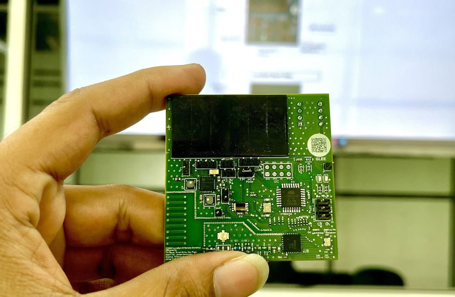
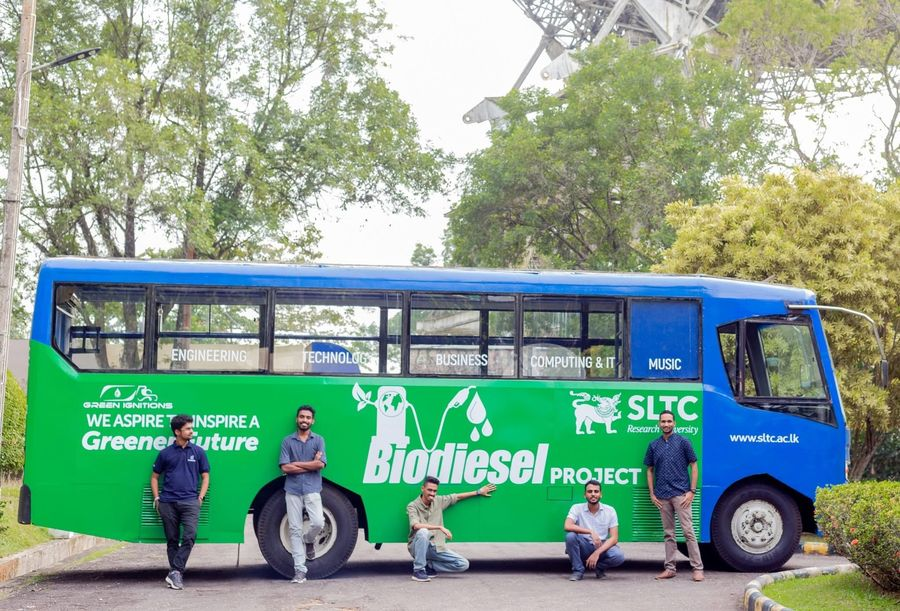
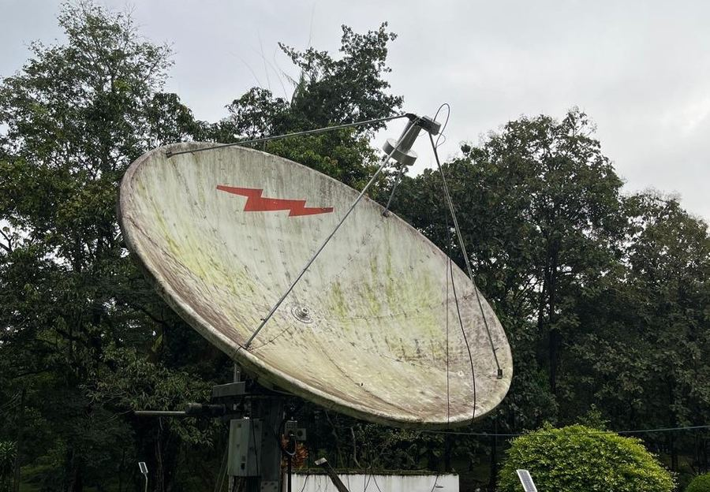

Master of Philosophy
Open University of Sri Lanka
2025 — Present
Specialised in Cognitive Science & Generative AI
I build intelligent systems that work alongside people — from EMG-driven exoskeletons and assistive robots to vision and speech models for early clinical screening.
S.M.U.S. Samarakoon earned his Bachelor's degree from the Sri Lanka Technology Campus in 2024. Since 2023 he has been part of the Computational Intelligence and Robotics (CIR) Research Lab, working across Artificial Intelligence, Robotics, Bionics and Ambient Assisted Living.
His work aims to push the limits of existing technology — enriching the collaboration between humans and machines, improving the performance of intelligent robots, and applying computer vision and AI to build more capable, more efficient systems. Through his research he hopes to advance Bionics and Robotics while encouraging the next generation of engineers.
Open University of Sri Lanka
2025 — Present
Specialised in Cognitive Science & Generative AI
Sri Lanka Technology Campus
2019 — 2023
Sri Lanka Technology Campus
2026 — PresentLecturing in the Department of Mechatronics Engineering — delivering coursework, supervising undergraduate projects, and supporting research activity across the department.
Computational Intelligence and Robotics (CIR) Research Lab
2023 — PresentConducting research in Artificial Intelligence, Robotics, Bionics and Ambient Assisted Living to advance the collaboration between humans and machines.
Sri Lanka Technology Campus
2024 — 2026Supported faculty and undergraduate students in the Department of Mechatronics Engineering across laboratory sessions, coursework and project supervision.
Sentinel Systems (Pvt) Ltd
2023 — 2024Researched, designed and tested prototypes for AI and product design solutions against project and industry requirements.
Current investigations into digital biomarkers — using AI to detect what the human eye and ear can miss, early enough to matter.
Identifying new patterns between Parkinson's Disease and vocal biomarkers. By analysing subtle voice characteristics, this work aims to enable early PD detection using AI models for clinical and telehealth applications.
Exploring the connection between facial biomarkers and stress levels. Advanced computer vision methods help reveal patterns that indicate psychological stress, paving the way for AI-driven stress monitoring.
Projects and collaborations beyond the lab.

A science and technology mission to the surface of the Moon, conducted by students from all over the world.

A biodiesel research team that emerged during Sri Lanka's diesel crisis, working on clean, renewable fuel solutions for a greener tomorrow.

After designing a radio telescope around a 5 m dish antenna, we successfully tuned in to the natural radio frequencies broadcast by the Milky Way.